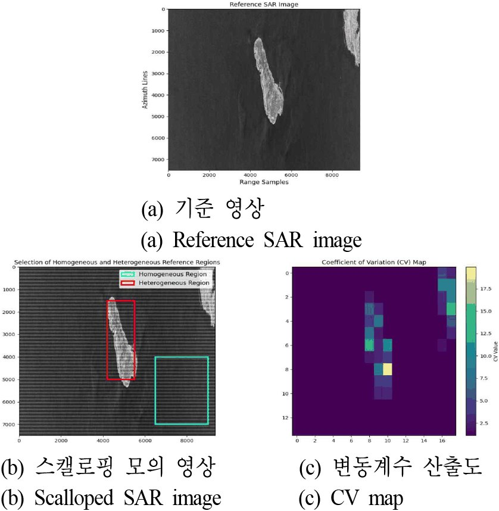

연구실적 · 국내전문학술지
장면 균질성에 따른 방위 방향 방사 기준선 기반 ScanSAR Scalloping 보정 안정성 분석
Stability Analysis of ScanSAR Descalloping Based on Azimuth Radiometric Baseline under Scene Homogeneity
 DOI
DOI PDF
PDF
초록
ScanSAR 모드는 광역 관측이 가능한 장점이 있으나, 버스트 운용 특성상 방위 방향으로 주기적인 방사 변동인 스캘로핑(scalloping) 현상이 수반된다. 이를 보정하기 위해 방위 방향 평균 강도 분포에서 방사 기준선을 추정하는 접근이 사용되나, 해당 기법의 성능은 참조 영역의 통계적 방사 특성에 의존한다. 본 연구에서는 장면의 균질성이 스캘로핑 주기 및 변조 성분 추정 성능에 미치는 영향을 분석하였다. 실험 결과, 비균질 영역을 참조할 경우, 지형 간섭으로 인해 추정 오차가 발생하여 영상 강도가 왜곡되는 반면, 균질 영역에서는 안정적인 변조 성분 추정 및 효과적인 보정이 가능함을 확인하였다. 이는 방사 기준선 기반 스캘로핑 보정 시 통계적 균질 영역 선정이 선행되어야 함을 시사한다.
사이트 원문 표기
김평주, 정지환, 민규보, 이우경, “장면 균질성에 따른 방위 방향 방사 기준선 기반 ScanSAR Scalloping 보정 안정성 분석”, 한국전자파학회논문지, 제37권 4호, 2026년
BibTeX
@article{Kim_2026,
title={Stability Analysis of ScanSAR Descalloping Based on Azimuth Radiometric Baseline under Scene Homogeneity},
volume={37},
ISSN={2288-226X},
url={http://dx.doi.org/10.5515/kjkiees.2026.37.4.342},
DOI={10.5515/kjkiees.2026.37.4.342},
number={4},
journal={The Journal of Korean Institute of Electromagnetic Engineering and Science},
publisher={Korean Institute of Electromagnetic Engineering and Science},
author={Kim, Pyeong-ju and Cheong, Ji-Hwan and Min, Gyu-bo and Lee, Woo-Kyung},
year={2026},
month=Apr,
pages={342–347}
}